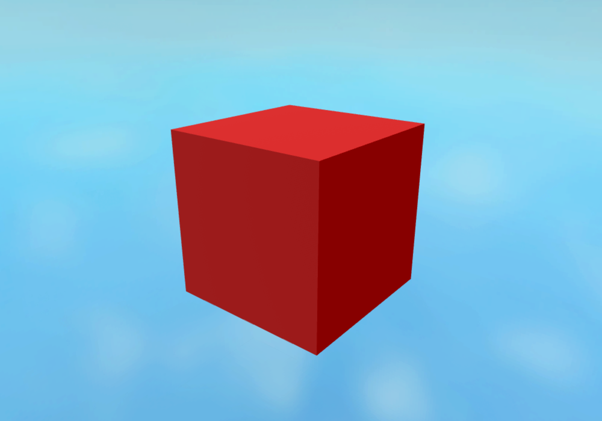
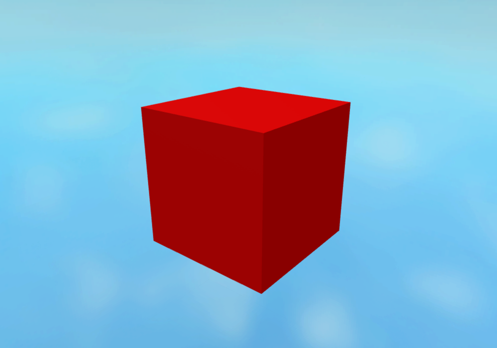
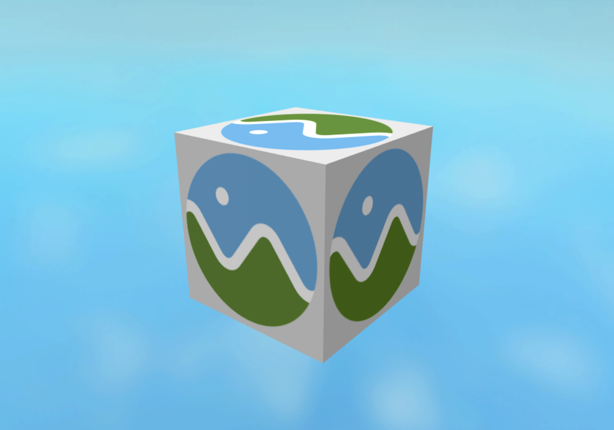
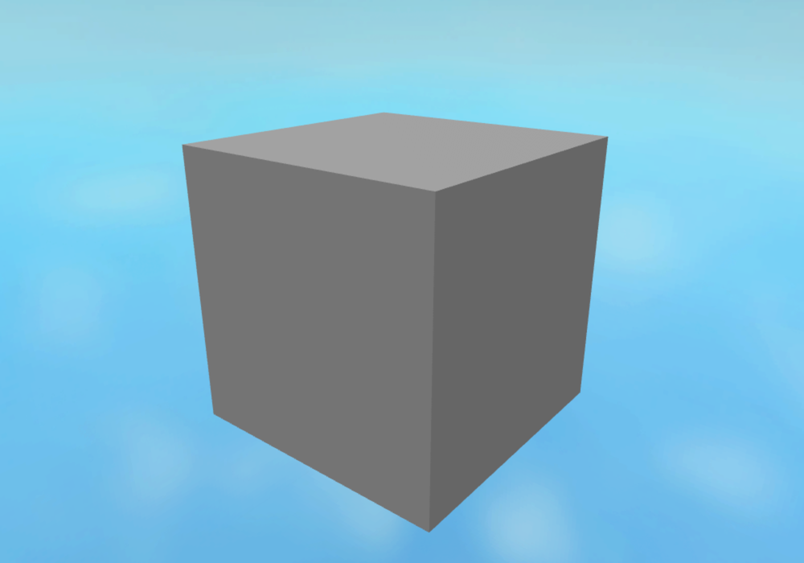
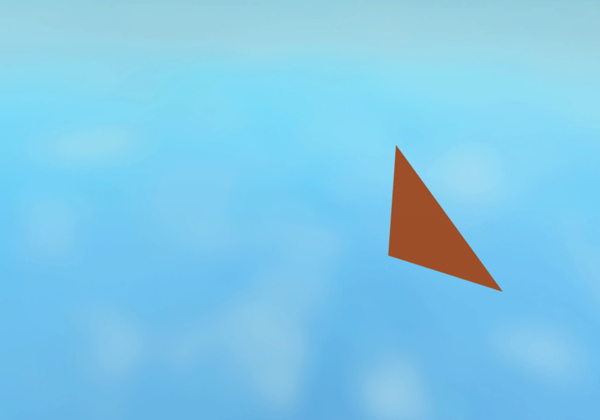

Scene import always returns one Model, builds supported animation rigs inside it, and has no animationRig option. Native playback uses CurveAnimation; morph geometry stays unposed and shared. Attachments, native materials, scalar factors and source frames survive round trips.
Baseline captures use the published rc.7 binary; current captures use the rc.8 implementation. Each pair shares a saved camera, 1000×700 viewport, lighting and scene state. Click any image for full resolution. Captures were inspected.
Untextured material: the native preview changes shading intentionally. No SurfaceAppearance or dummy images are created; original PBR factors remain exportable.


Textured material: geometry, UVs and image placement remain consistent.

Zero-weight initial pose: silhouette remains consistent. Nonzero per-instance weights, shared base geometry and edited normals are verified separately by scene tests; this view does not claim to show animated morph playback.

Skinned triangle at 0.5 seconds. CurveAnimation preserves the STEP rotation and cubic translation; this comparison caught and verified the fix for a premature rotation ramp.

Validation: 23 scene tests and 43 Rust runtime tests pass; a separate release-stamp regression passes. The scene regressions cover static/animated root shape, attachments and clones, nonuniform sizes, strict failures, mesh normals, shared morph bases, source-key curves, composed STEP playback and seven pinned Khronos fixtures. Their GLB outputs pass the independent Khronos validator and Blender import. Blender report · Capture script
Follow-ups: native playback limits, morph preview, asset materialization. The streamed JSON descriptor remains in use; its typed protobuf migration is deferred in #25.
{kind=link}
{kind=link}
{kind=link}
{kind=link}
{kind=link}
{kind=link}
{kind=link}
{kind=link}